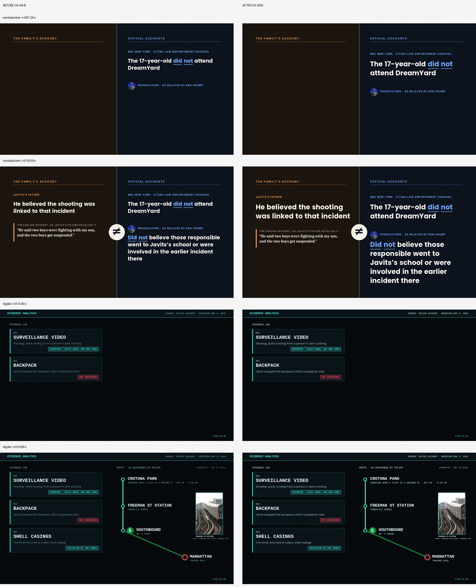
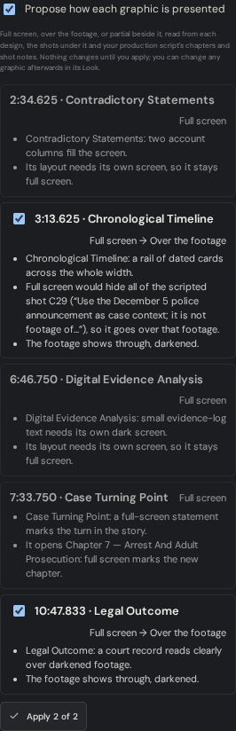

Same speed, smoother moves: every reveal keeps its 0.28 s, but less of the move happens in the first frame, so you see it move instead of jumping into place. Conflicting accounts: statements take the largest size that fits (up to 56 px from 44) and the block is centred, which leaves less empty space. Digital: detail text and labels are brighter (contrast 5.3:1 → 9.6:1), with slightly larger detail lines. Photos: the timeline thumbnails ease to a stop, and the station photo pushes in as the place is named. The other designs are pixel-identical once settled.
Findings: the design is unchanged; only how smoothly things move has changed.

A new tick box in Motion: Propose how each graphic is presented. When it is ticked, every cinematic graphic gets a proposal: full screen, over the footage, or partial (smaller, to one side of the footage). Each proposal comes with its reasons, taken from the design, the shots under the graphic, and your production script's chapters and shot notes. Nothing changes until you tick the proposals you want and press Apply. Each applied proposal becomes that graphic's own look, so you can change it in Look, and Undo puts everything back. When the box is unticked, the app behaves exactly as before.

The engine read your project's 158 scenes, narration, footage guide and production script, placed 5 graphics, and proposed how to present them (2 changes, applied here). It drew each graphic through the export code with its sound cues.
Limitation: the project's footage and narration audio (about 1.16 GB) are not in this sandbox. So the clips play over black where the graphic sits over footage, and you hear only the sound cues, without narration.
On your Mac, qa/motion_check.py renders the same clips over your footage, with your narration, and times every step.
| Step | Seconds (2-core sandbox) |
|---|---|
| Read the story and place the graphics | 0.4 |
| Propose the presentation | 0.003 |
| Draw all 5 export layers (87.42 s of graphics) | 35.53 (was 66.5 before the text-layout cache) |
Why here: opposed claims share ['acted', 'moore', 'shooting']
Presentation: own → own
Sound cues: 0.00s whoosh-short-1, 0.12s whoosh-short-2, 0.40s click-mech-2, 8.44s click-mech-2, 9.64s impact-tr-1, 9.64s bass-hit-1, 13.57s rwhoosh-3
Drawn in 5.31 s (62.9 fps, 2.62× real time) on this 2-core sandbox. Shown over its own background.
Why here: 3 clock times on 2024-04-17
Presentation: own → footage
Sound cues: 0.05s whoosh-dir-r, 0.45s click-muted-1, 6.17s tick-1, 17.09s click-muted-2, 17.42s tick-1, 25.59s click-muted-3, 25.88s tick-1, 30.20s rwhoosh-2
Drawn in 10.21 s (71.8 fps, 2.99× real time) on this 2-core sandbox. Shown over black (the footage file is not on this machine).
Why here: evidence ['SURVEILLANCE VIDEO', 'COMMUNICATION RECORDS', 'SOCIAL MEDIA MESSAGES', 'SEARCH HISTORY', 'NOTES'] + route of 0 moves
Presentation: own → own
Sound cues: 0.00s scan-1, 3.29s key-soft-1, 3.34s key-soft-3, 3.39s key-soft-5, 3.44s key-soft-1, 3.49s key-soft-3, 3.54s key-soft-5, 3.59s key-soft-1, 3.64s key-soft-3, 3.69s key-soft-5, 6.28s key-soft-1, 6.33s key-soft-3, 6.38s key-soft-5, 6.43s key-soft-1, 6.48s key-soft-3, 6.53s key-soft-5, 6.58s key-soft-1, 6.63s key-soft-3, 6.68s key-soft-5, 6.73s key-soft-1, 6.78s key-soft-3, 9.72s key-soft-1, 9.77s key-soft-3, 9.82s key-soft-5, 9.87s key-soft-1, 9.92s key-soft-3, 9.97s key-soft-5, 10.02s key-soft-1, 10.07s key-soft-3, 10.12s key-soft-5, 10.17s key-soft-1, 10.22s key-soft-3, 11.82s key-soft-1, 11.87s key-soft-3, 11.92s key-soft-5, 11.97s key-soft-1, 12.02s key-soft-3, 12.07s key-soft-5, 12.12s key-soft-1, 11.22s key-soft-1, 11.27s key-soft-3, 11.32s key-soft-5, 13.35s rwhoosh-1
Drawn in 7.22 s (45.6 fps, 1.9× real time) on this 2-core sandbox. Shown over its own background.
Why here: dated arrested, 231 days after the incident, as the narration counts
Presentation: own → own
Sound cues: 0.50s riser-2, 0.50s impact-tr-2, 0.50s bass-hit-2, 0.75s tick-seq-1, 6.92s click-mech-1, 16.00s rwhoosh-2
Drawn in 6.48 s (60.5 fps, 2.52× real time) on this 2-core sandbox. Shown over its own background.
Why here: charges ['murder']; court=Hillsborough County Circuit Court; judge=J. Logan Murphy; outcome=held without bail
Presentation: own → footage
Sound cues: 0.00s paper-1, 11.03s type-strike-1, 2.55s doc-1, 7.13s type-strike-4, 10.01s thump-deep-2, 10.03s doc-2, 12.56s paper-2
Drawn in 6.31 s (49.1 fps, 2.05× real time) on this 2-core sandbox. Shown over black (the footage file is not on this machine).